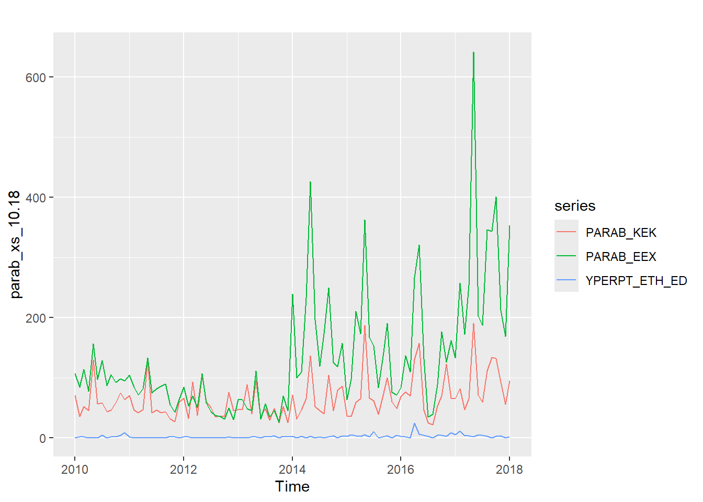
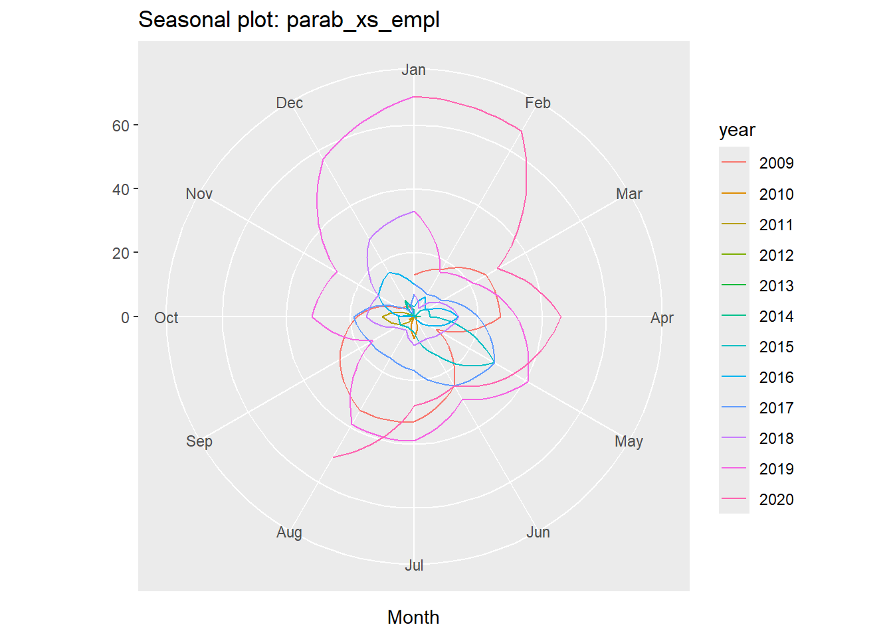

Οι χρονικές σειρές είναι σειρές δεδομένων που περιέχουν παρατηρήσεις που σχετίζονται με τον χρόνο. Μελετώντας τις χρονικές σειρές μπορούμε να απαντήσουμε σε ερωτήσεις όπως «Πώς εξελίσσονται τα δεδομένα με την πάροδο του χρόνου;» και μπορούμε να αποκαλύψουμε τάσεις, εποχικότητες, ανωμαλίες και άλλα ποιοτικά χαρακτηριστικά που αντανακλούν τη δυναμική της συγκεκριμένης χρονικής σειράς.
Χρονικές σειρές θα συναντήσουμε σε πολλούς τομείς, όπως η οικονομία, η μετεωρολογία, η δημόσια υγεία, τα χρηματοοικονομικά κ.τ.λ. Οι ανάλυση των χρονικών σειρών μπορεί να παράσχει εισηγήσεις για τη λήψη αποφάσεων, τον προγραμματισμό, την πρόβλεψη και τον εντοπισμό προτύπων στα θέματα αυτά.
Στην ενότητα αυτή θα μελετήσουμε την εξέλιξη των προστριβών ανάμεσα στην Ελλάδα και την Τουρκία τα έτη 2009-2020, όπως παρουσιάζονται από τα στατιστικά του ΓΕΕΘΑ. Τα στοιχεία έχουν αποθηκευτεί σε ένα αρχείο ονόματι enaerParab.xlsx.
| ETOS | MHNAS | PARAB_KEK | PARAB_EEX | OPL_SXHM | EMPLOKES | YPERPT_ETH_ED | SYNOLO_AER |
|---|---|---|---|---|---|---|---|
| 2009 | Ir | 65 | 106 | 37 | 13 | 7 | 250 |
| 2009 | Fe | 47 | 123 | 34 | 17 | 2 | 259 |
| 2009 | Mr | 92 | 152 | 36 | 26 | 3 | 306 |
| 2009 | Ar | 41 | 160 | 32 | 27 | 7 | 229 |
| 2009 | Ma | 121 | 163 | 35 | 8 | 2 | 281 |
| 2009 | In | 57 | 146 | 34 | 25 | 7 | 247 |
| 2009 | Il | 50 | 217 | 42 | 33 | 12 | 310 |
| 2009 | Au | 48 | 225 | 38 | 34 | 4 | 293 |
| 2009 | Se | 43 | 103 | 31 | 27 | 1 | 253 |
| 2009 | Ok | 42 | 69 | 25 | 18 | 0 | 204 |
| 2009 | No | 47 | 108 | 26 | 5 | 2 | 219 |
| 2009 | De | 50 | 106 | 25 | 4 | 4 | 227 |
| 2010 | Ir | 70 | 107 | 26 | 1 | 0 | 239 |
| 2010 | Fe | 35 | 84 | 28 | 0 | 1 | 220 |
| 2010 | Mr | 52 | 114 | 40 | 1 | 1 | 324 |
| 2010 | Ar | 45 | 77 | 27 | 0 | 0 | 239 |
| 2010 | Ma | 129 | 156 | 30 | 1 | 0 | 266 |
| 2010 | In | 56 | 97 | 34 | 1 | 0 | 292 |
| 2010 | Il | 58 | 128 | 46 | 7 | 4 | 316 |
| 2010 | Au | 43 | 87 | 34 | 0 | 0 | 246 |
| 2010 | Se | 46 | 105 | 29 | 2 | 1 | 233 |
| 2010 | Ok | 58 | 92 | 23 | 0 | 1 | 215 |
| 2010 | No | 74 | 98 | 22 | 0 | 4 | 206 |
| 2010 | De | 63 | 94 | 28 | 0 | 8 | 234 |
| 2011 | Ir | 70 | 104 | 34 | 0 | 1 | 274 |
| 2011 | Fe | 46 | 84 | 33 | 0 | 0 | 265 |
| 2011 | Mr | 41 | 71 | 31 | 0 | 0 | 245 |
| 2011 | Ar | 47 | 81 | 31 | 0 | 0 | 254 |
| 2011 | Ma | 128 | 133 | 22 | 0 | 0 | 232 |
| 2011 | In | 41 | 74 | 25 | 0 | 0 | 212 |
| 2011 | Il | 46 | 81 | 32 | 0 | 0 | 198 |
| 2011 | Au | 41 | 86 | 30 | 0 | 0 | 192 |
| 2011 | Se | 43 | 89 | 30 | 5 | 0 | 199 |
| 2011 | Ok | 31 | 54 | 14 | 10 | 2 | 127 |
| 2011 | No | 27 | 42 | 9 | 1 | 1 | 96 |
| 2011 | De | 59 | 63 | 16 | 0 | 0 | 147 |
| 2012 | Ir | 66 | 84 | 16 | 1 | 1 | 146 |
| 2012 | Fe | 32 | 53 | 10 | 0 | 1 | 81 |
| 2012 | Mr | 93 | 69 | 21 | 0 | 0 | 174 |
| 2012 | Ar | 37 | 50 | 16 | 0 | 0 | 110 |
| 2012 | Ma | 104 | 107 | 19 | 0 | 0 | 194 |
| 2012 | In | 60 | 58 | 23 | 0 | 0 | 157 |
| 2012 | Il | 50 | 43 | 15 | 0 | 0 | 96 |
| 2012 | Au | 34 | 37 | 13 | 0 | 0 | 77 |
| 2012 | Se | 36 | 35 | 9 | 0 | 0 | 69 |
| 2012 | Ok | 35 | 31 | 9 | 0 | 0 | 75 |
| 2012 | No | 75 | 49 | 14 | 0 | 1 | 135 |
| 2012 | De | 45 | 30 | 11 | 0 | 0 | 91 |
| 2013 | Ir | 47 | 63 | 13 | 0 | 0 | 103 |
| 2013 | Fe | 47 | 63 | 9 | 0 | 0 | 88 |
| 2013 | Mr | 88 | 48 | 11 | 0 | 0 | 118 |
| 2013 | Ar | 40 | 45 | 8 | 0 | 1 | 74 |
| 2013 | Ma | 94 | 111 | 14 | 0 | 1 | 119 |
| 2013 | In | 34 | 31 | 9 | 0 | 0 | 62 |
| 2013 | Il | 48 | 56 | 14 | 0 | 2 | 105 |
| 2013 | Au | 29 | 34 | 11 | 0 | 1 | 76 |
| 2013 | Se | 48 | 45 | 14 | 0 | 3 | 109 |
| 2013 | Ok | 25 | 26 | 7 | 0 | 0 | 65 |
| 2013 | No | 52 | 69 | 11 | 0 | 2 | 99 |
| 2013 | De | 25 | 45 | 8 | 0 | 1 | 66 |
| 2014 | Ir | 71 | 239 | 18 | 0 | 2 | 138 |
| 2014 | Fe | 31 | 100 | 8 | 0 | 0 | 68 |
| 2014 | Mr | 47 | 109 | 13 | 0 | 2 | 105 |
| 2014 | Ar | 65 | 233 | 12 | 2 | 0 | 109 |
| 2014 | Ma | 136 | 426 | 14 | 0 | 2 | 156 |
| 2014 | In | 52 | 196 | 8 | 0 | 0 | 79 |
| 2014 | Il | 45 | 119 | 13 | 0 | 1 | 96 |
| 2014 | Au | 40 | 173 | 11 | 0 | 0 | 77 |
| 2014 | Se | 104 | 249 | 14 | 0 | 1 | 129 |
| 2014 | Ok | 45 | 125 | 11 | 0 | 3 | 88 |
| 2014 | No | 79 | 118 | 9 | 0 | 0 | 100 |
| 2014 | De | 86 | 157 | 14 | 6 | 3 | 124 |
| 2015 | Ir | 36 | 63 | 10 | 2 | 2 | 79 |
| 2015 | Fe | 35 | 97 | 11 | 0 | 5 | 84 |
| 2015 | Mr | 59 | 210 | 14 | 5 | 3 | 127 |
| 2015 | Ar | 65 | 173 | 10 | 5 | 2 | 136 |
| 2015 | Ma | 187 | 362 | 25 | 29 | 5 | 276 |
| 2015 | In | 66 | 167 | 16 | 14 | 1 | 143 |
| 2015 | Il | 61 | 153 | 10 | 5 | 10 | 111 |
| 2015 | Au | 39 | 83 | 5 | 4 | 0 | 73 |
| 2015 | Se | 70 | 135 | 8 | 5 | 1 | 87 |
| 2015 | Ok | 100 | 190 | 12 | 5 | 3 | 118 |
| 2015 | No | 60 | 75 | 6 | 1 | 0 | 80 |
| 2015 | De | 48 | 71 | 6 | 5 | 4 | 70 |
| 2016 | Ir | 68 | 83 | 5 | 3 | 2 | 89 |
| 2016 | Fe | 76 | 136 | 9 | 7 | 1 | 101 |
| 2016 | Mr | 69 | 109 | 5 | 4 | 0 | 77 |
| 2016 | Ar | 130 | 267 | 12 | 14 | 24 | 133 |
| 2016 | Ma | 157 | 321 | 11 | 6 | 6 | 159 |
| 2016 | In | 46 | 131 | 3 | 1 | 4 | 54 |
| 2016 | Il | 25 | 34 | 2 | 0 | 2 | 31 |
| 2016 | Au | 21 | 39 | 0 | 0 | 0 | 15 |
| 2016 | Se | 53 | 88 | 1 | 0 | 4 | 49 |
| 2016 | Ok | 69 | 176 | 7 | 4 | 4 | 78 |
| 2016 | No | 122 | 126 | 13 | 13 | 2 | 145 |
| 2016 | De | 66 | 161 | 18 | 16 | 8 | 85 |
| 2017 | Ir | 65 | 133 | 16 | 10 | 5 | 70 |
| 2017 | Fe | 81 | 257 | 26 | 8 | 11 | 83 |
| 2017 | Mr | 47 | 172 | 20 | 10 | 3 | 79 |
| 2017 | Ar | 65 | 254 | 18 | 20 | 3 | 97 |
| 2017 | Ma | 190 | 642 | 30 | 29 | 1 | 201 |
| 2017 | In | 71 | 202 | 21 | 25 | 5 | 96 |
| 2017 | Il | 59 | 187 | 20 | 17 | 4 | 84 |
| 2017 | Au | 111 | 346 | 26 | 15 | 2 | 139 |
| 2017 | Se | 134 | 343 | 34 | 16 | 0 | 168 |
| 2017 | Ok | 132 | 401 | 28 | 19 | 2 | 143 |
| 2017 | No | 93 | 212 | 7 | 6 | 3 | 89 |
| 2017 | De | 55 | 168 | 11 | 1 | 0 | 81 |
| 2018 | Ir | 94 | 353 | 11 | 7 | 1 | 89 |
| 2018 | Fe | 82 | 377 | 9 | 3 | 6 | 90 |
| 2018 | Mr | 70 | 190 | 18 | 9 | 0 | 68 |
| 2018 | Ar | 101 | 280 | 20 | 14 | 5 | 124 |
| 2018 | Ma | 202 | 361 | 16 | 10 | 0 | 239 |
| 2018 | In | 98 | 385 | 11 | 8 | 11 | 161 |
| 2018 | Il | 84 | 271 | 10 | 9 | 0 | 126 |
| 2018 | Au | 68 | 276 | 14 | 5 | 2 | 109 |
| 2018 | Se | 113 | 273 | 13 | 7 | 0 | 161 |
| 2018 | Ok | 214 | 381 | 25 | 15 | 4 | 236 |
| 2018 | No | 134 | 233 | 21 | 13 | 0 | 180 |
| 2018 | De | 141 | 325 | 28 | 28 | 18 | 192 |
| 2019 | Ir | 146 | 338 | 33 | 33 | 7 | 199 |
| 2019 | Fe | 81 | 245 | 17 | 16 | 0 | 124 |
| 2019 | Mr | 135 | 378 | 26 | 21 | 6 | 193 |
| 2019 | Ar | 136 | 281 | 23 | 32 | 5 | 184 |
| 2019 | Ma | 290 | 506 | 44 | 41 | 2 | 327 |
| 2019 | In | 127 | 663 | 28 | 30 | 10 | 137 |
| 2019 | Il | 118 | 355 | 29 | 39 | 6 | 161 |
| 2019 | Au | 95 | 341 | 27 | 39 | 11 | 106 |
| 2019 | Se | 132 | 413 | 21 | 15 | 3 | 171 |
| 2019 | Ok | 139 | 507 | 32 | 32 | 21 | 180 |
| 2019 | No | 199 | 342 | 25 | 28 | 9 | 208 |
| 2019 | De | 185 | 444 | 39 | 57 | 44 | 234 |
| 2020 | Ir | 189 | 597 | 55 | 69 | 62 | 261 |
| 2020 | Fe | 131 | 541 | 41 | 67 | 54 | 172 |
| 2020 | Mr | 181 | 425 | 36 | 30 | 58 | 190 |
| 2020 | Ar | 132 | 507 | 38 | 46 | 81 | 160 |
| 2020 | Ma | 93 | 420 | 27 | 36 | 47 | 120 |
| 2020 | In | 120 | 459 | 20 | 25 | 36 | 149 |
| 2020 | Il | 125 | 558 | 23 | 28 | 20 | 142 |
| 2020 | Au | 281 | 457 | 38 | 51 | 6 | 283 |
Θα πρέπει να μετρατραπούν σε χρονικές σειρές κι αυτό θα γίνει με τη
συνάρτηση ts(📝📝📝, start =📒📒📒, frequency =⏱⏱⏱). Ας τη
δούμε πιο συγκεκριμένα:
📝📝📝 θα βάλουμε τις στήλες από τα
δεδομένα μας, των οποίων μάς απασχολεί η χρονική εξέλιξη. Εμείς εδώ
ενδιαφερόμαστε για τις παραβάσεις των Κανόνων Εναέριας Κυκλοφορίας, τις
παραβιάσεις του Εθνικού Εναέριου Χώρου και τις υπερπτήσεις υπεράνω
εθνικού χερσαίου εδάφους, επομένως θέλουμε τις στήλες 3, 4 και 7, οπότε
στη θέση αυτή θα γράψουμε enaerParab[ , c(3,4,7)].⏱⏱⏱ θα πάει
το 12. Αν είχαμε εποχικές καταγραφές, π.χ. Ανοιξη, Καλοκαίρι, Φθινόπωρο,
Χειμώνας, τότε θα γράφαμε 4.📒📒📒 θα πάει το σημείο που αρχίζει η
πρώτη καταγραφή. Εμείς έχουμε πρώτη καταγραφή τον Ιανουάριο του 2009,
οπότε θα γράψουμε c(2009, 1), αφού ο Ιανουάριος είναι ο 1ος
μήνας του χρόνου. Αν οι καταγραφές άρχιζαν τον Μάρτιο, τότε θα γράφαμε
c(2009, 3). Από την άλλη, αν είχαμε καταγραφές ανά εποχή,
τότε:
c(2009, 1) αν η πρώτη καταγραφή συνέβαινε
Ιανουάριο, Φεβρουάριο ή Μάρτιο,c(2009, 2) αν η πρώτη καταγραφή συνέβαινε
Απρίλιο, Μάιο ή Ιούνιο, θα γράφαμε c(2009, 3) αν η πρώτη καταγραφή
συνέβαινε Ιούλιο, Αύγουστο, ή Σεπτέμβριο καιc(2009, 4) αν η πρώτη καταγραφή συνέβαινε
Οκτώβριο, Νοέμβριο ή Δεκέμβριο.Οπότε γράφουμε:
Τέλος, ας υποθέσουμε ότι θέλουμε να κρατήσουμε στοιχεία μόνο για τα
έτη 2010-2018. Μπορούμε να κόψουμε από τη χρονική σειρά μας το τμήμα που
επιθυμούμε μέσω της συνάρτησης
window(📡📡📡 , start = ⚠️⚠️⚠️, end = 🛑🛑🛑).
Συγκεκριμένα:
στη θέση του 📡📡📡 θα βάλουμε τις χρονικές σειρές
που έχουμε, δηλαδή εδώ θα γράψουμε το parab_xs,
στη θέση του ⚠️⚠️⚠️ θα γράψουμε από πού θέλουμε ν’
αρχίζει η καταγραφή, δηλαδή εδώ στο 2010 και
στη θέση του 🛑🛑🛑 γράφουμε πού θέλουμε να
σταματάει η καταγραφή, δηλαδή εν προκειμένω στο 2018.
Γράφουμε λοιπόν:
Μια πρώτη παρουσίαση των δεδομένων μας μπορεί να γίνει με τη
συνάρτηση plot() που έχουμε ξαναδεί:
Μπορούμε να έχουμε μια ομορφότερη και πιο συμμαζευμένη παρουσίαση
χρησιμοποιώντας τη συνάρτηση autoplot(), όρισμα της οποίας
θα είναι τα χρονικά δεδομένα που έχουμε φτιάξει. Αυτή όμως χρειάζεται το
πακέτο forecast, οπότε πρώτα γράφουμε:
Έχουμε δηλαδή:
Κι έτσι προκύπτουν τα κάτωθι χρονοδιαγράμματα των παραβάσεων των Κανόνων Εναέριας Κυκλοφορίας, των παραβιάσεων του Εθνικού Εναέριου Χώρου και των υπερπτήσεων υπεράνω εθνικού χερσαίου εδάφους με διαφορετικό χρόμα το κάθε ένα.
Μπορούμε να αλλάξουμε λίγο τη μορφή παρουσίασής τους, γράφοντας:
Οπότε έχουμε έτσι τρία ξεχωριστά χρονοδιαγράμματα μαζί.
Αξίζει να δούμε πώς παρουσιάζονται τα περικομμένα δεδομένα μας, τα
parab_xs_10.18, γράφοντας:

Βλέπουμε εδώ καθαρά ότι ο καταγεγραμμένος χρόνος εκτείνεται στα έτη 2010-2018, όπως και θέλαμε.
Ας εστιάσουμε τώρα στις εμπλοκές που έχουν γίνει. Γράφουμε καταρχάς:
ώστε να έχουμε τους αριθμούς των εμπλοκών ως χρονοσειρά. Επιλέξαμε την 6η στήλη, διότι εκεί βρίσκονται οι εμπλοκές.
Το σύνηθες χρονογράφημα δεν παρουσιάζει καμία έκπληξη.
Είναι ό,τι ξέραμε και πριν, απλά με ένα μόνο χρονοδιάγραμμα, αφού έχουμε μόνο μία στήλη να παρουσιάσουμε.
Εστιάζοντας μόνο σε κάποια δεδομένα, τις εμπλοκές εν προκειμένω, μπορούμε να έχουμε μεγαλύτερη ποικιλία γραφημάτων. Επί παραδείγματι, ας γράψουμε:
Έχουμε την μηνιαία εξέλιξη των εμπλοκών για κάθε έτος ξεχωριστά. Δηλαδή το ένα χρονοδιάγραμμα δείχνει πώς εξελίσσονταν οι εμπλοκές το έτος 2009, το άλλο δείχνει πώς εξελίσσονταν το 2010 κ.τ.λ.
Η αλήθεια είναι ότι δεν είναι πολύ κατανοητό ποια γραμμή αντιστοιχεί σε ποιο έτος. Αυτό διορθώνεται γράφοντας:
Οπότε το κάθε χρονοδιάγραμμα έχει από δίπλα το έτος που του αντιστοιχεί.
Ένα μειονέκτημα που έχει αυτή η παρουσίαση είναι ότι δεν φαίνεται καλά η εξέλιξη της κατάστασης από έτος σε έτος. Είναι καλή για να δούμε το κάθε έτος ξεχωριστά, αλλά για μια παράλληλη σύγκριση όλων των ετών δεν βολεύει πολύ. Προς τούτο μπορούμε να γράψουμε εναλλακτικά:
Έτσι, η πορεία των εμπλοκών από έτος σε έτος φαίνεται καλύτερα μέσω της διαβάθμισης των χρωμάτων. Βέβαια, είναι πλέον δύσκολο να δούμε ποια γραμμή αντιστοιχεί σε ποιο έτος, φαίνεται όμως ευκρινέστερα η ετήσια εξέλιξη. Κάτι κερδίζεις, κάτι χάνεις σ’ αυτή τη ζωή.
Πέραν της κλασσικής μορφής χρονοδιαγράμματος, έχουμε και το πολικό διάγραμμα. Αυτό δημιουργείται γράφοντας:

Έτσι, οι εμπλοκές παρουσιάζονται να εξελίσσονται στο χρόνο περιστρεφόμενες γύρο από ένα κέντρο, όπως οι δείκτες του ρολογιού. Κάθε ακτίνα αντιστοιχεί σε κάποιον μήνα κι η απόσταση από το κέντρο αντιστοιχεί στο πλήθος των εμπλοκών: ήτοι πολλές εμπλοκές σημαίνει μεγάλη απόσταση, ενώ λίγες εμπλοκές σημαίνει μικρή απόσταση.
Τέλος θα δούμε ένα λίγο-πολύ αντίστροφης λογικής διάγραμμα. Γράφουμε:
Έχουμε, λοιπόν, 12 χρονοδιαγράμματα, ένα για κάθε μήνα. Έτσι, το 1ο χρονοδιάγραμμα που αντιστοιχεί στον Ιανουάριο, δείχνει την ετήσια πορεία των εμπλοκών κατά τον μήνα Ιανουάριο στο κάθε έτος. Δείχνει, δηλαδή, πώς ήταν οι εμπλοκές τον Ιανουάριο του κάθε έτους. Με άλλα λόγια, δείχνει πώς εξελισσόταν ο Ιανουάριος από έτος σε έτος. Τα ίδια μπορούμε να πούμε και για το 2ο χρονοδιάγραμμα που αφορά τον Φεβρουάριο κ.τ.λ.
Οι μπλε γραμμές παρουσιάζουν τις μέσες τιμές για κάθε μήνα. Δηλαδή η 1η μπλε γραμμή υποδηλώνει πόσες κατά μέσο όρο εμπλοκές γινόντουσαν τον Ιανουάριο κατά τα έτη που ασχολούμαστε. Η 2η μπλε γραμμή δείχνει τη μέση τιμή των εμπλοκών που συνέβαιναν τον Φεβρουάριο κατά τα έτη που χειριζόμαστε εδώ κ.τ.λ.
Όλος ο κώδικας που γράψαμε παρατίθεται μαζεμένος παρακάτω:
parab_xs <- ts(enaerParab[ , c(3,4,7)], start = c(2009, 1), frequency = 12)
parab_xs_10.18 <- window(parab_xs, start = 2010, end = 2018)
plot(parab_xs)
if(!require(forecast)){
install.packages("forecast")
library(forecast)
}
autoplot(parab_xs)
autoplot(parab_xs, facets = TRUE)
autoplot(parab_xs_10.18)
parab_xs_empl <- ts(enaerParab[ , 6], start = c(2009, 1), frequency = 12)
autoplot(parab_xs_empl)
ggseasonplot(parab_xs_empl)
ggseasonplot(parab_xs_empl, year.labels=TRUE)
ggseasonplot(parab_xs_empl, continuous=TRUE)
ggseasonplot(parab_xs_empl, polar = T)
ggsubseriesplot(parab_xs_empl)